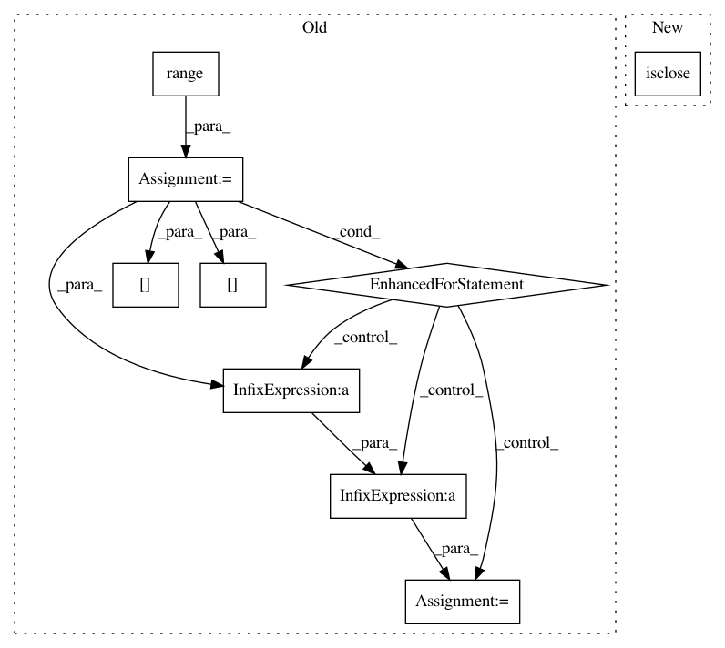

5b58ab5c45be8923e5d74e3bc84101be1ad13066,Orange/widgets/unsupervised/owmds.py,OWMDS,_setup_plot,#OWMDS#,749
Before Change
self._similar_pairs = fpairs = numpy.empty(2 * p, dtype=int)
fpairs[::2] = indcs[0][sorted]
fpairs[1::2] = indcs[1][sorted]
for i in range(int(len(emb_x[self._similar_pairs]) / 2)):
item = QGraphicsLineItem(
emb_x[self._similar_pairs][i * 2],
emb_y[self._similar_pairs][i * 2],
emb_x[self._similar_pairs][i * 2 + 1],
emb_y[self._similar_pairs][i * 2 + 1]
)
if item.line().isNull():
// Null (zero length) line causes bad rendering artifacts
// in Qt when using the raster graphics system
// (see gh-issue: 1668).
continue
pen = QPen(QBrush(QColor(204, 204, 204)), 2)
pen.setCosmetic(True)
item.setPen(pen)
self.plot.addItem(item)
data = numpy.arange(size)
self._scatter_item = item = ScatterPlotItem(
x=emb_x, y=emb_y,
pen=self._pen_data, brush=self._brush_data, symbol=self._shape_data,
After Change
// Null (zero length) line causes bad rendering artifacts
// in Qt when using the raster graphics system (see gh-issue: 1668).
(x1, x2), (y1, y2) = (emb_x_pairs.T, emb_y_pairs.T)
pairs_mask = ~(numpy.isclose(x1, x2) & numpy.isclose(y1, y2))
emb_x_pairs = emb_x_pairs[pairs_mask, :]
emb_y_pairs = emb_y_pairs[pairs_mask, :]
In pattern: SUPERPATTERN
Frequency: 3
Non-data size: 9
Instances
Project Name: biolab/orange3
Commit Name: 5b58ab5c45be8923e5d74e3bc84101be1ad13066
Time: 2017-08-21
Author: ales.erjavec@fri.uni-lj.si
File Name: Orange/widgets/unsupervised/owmds.py
Class Name: OWMDS
Method Name: _setup_plot
Project Name: geomstats/geomstats
Commit Name: e4eaec6cbd34c7abc59fcf29a95dab3c9f2810b8
Time: 2018-09-12
Author: ninamio78@gmail.com
File Name: geomstats/riemannian_metric.py
Class Name: RiemannianMetric
Method Name: mean
Project Name: geomstats/geomstats
Commit Name: 57b3d54234cda1decf80764f856ab255b8d13c1d
Time: 2018-09-14
Author: ninamio78@gmail.com
File Name: geomstats/riemannian_metric.py
Class Name: RiemannianMetric
Method Name: mean